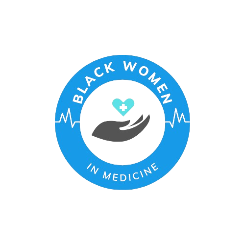

Black women have long been at the forefront of the struggle for justice and equality, yet their contributions have been largely overlooked in dominant social justice narratives. Similarly, a unique combination of demanding expectations and hyperscrutiny can constrict Black women in medicine. The medical profession does not give them special protections. Black women physicians are simultaneously considered superhuman, but never enough. This conflicting situation places Black women in a state of unease as their personal identity clashes with societal expectations of success.
But why do black women who seek a career in medicine struggle?